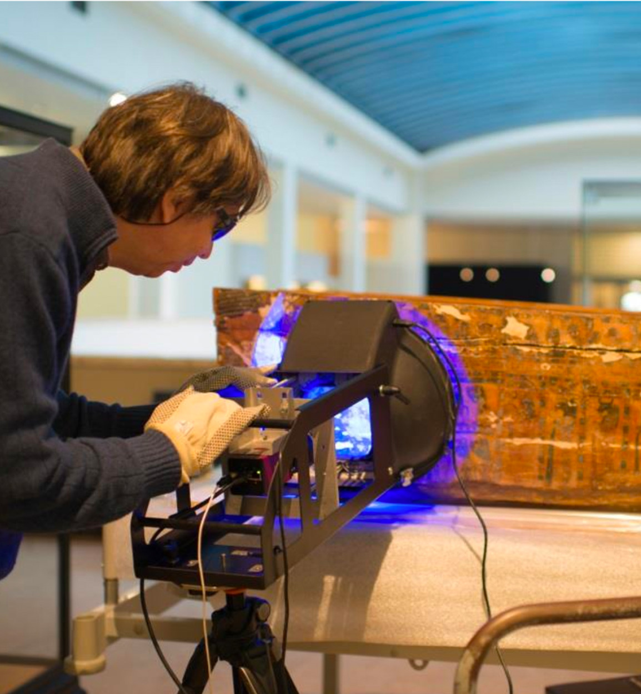

PLD¶
Hardware¶
There is a large variety of scanning equipment available, but in essence, both PLD and RTI require a set of images of an object that is illuminated from various known directions. PLD has a set of scanning domes, both with white light LEDs as well as narrow band near infrared, red, green, blue and near ultra violet light LEDs for multi spectral recordings. Can be listed:
White Light Mecano Minidome | Multispectral Minidome | White Light Microdome | Multispectral Microdome
 Use of multispectral microdome (PLD system) to scan an Egyptian coffin (@ Art and History Museum, Brussels)Algorithm¶
PLD uses certain light material interaction models to estimate material properties.
When light interacts with matter, it can be amongst other things absorbed, transmitted or reflected. In what follows, we make abstraction of effects like interference, diffraction, scattering and the photoelectric effect 1. They definitely are useful to study and model certain properties - e.g. Rayleigh scattering to explain why the sky is blue and Mie scattering why clouds are greyish white, but are generally not used in 3D scanning approaches.
Certain materials are perfectly matte; They reflect light isotropically. The observed reflected intensity is proportional to the cosine of the angle between the direction of the incident light and the surface orientation. This is sometimes refered to as Lambert’s cosine law or Lambertian reflectance.
Unfinished wood or blotted paper are examples of Lambertian reflective materials. The Moon however is not. If it were, the edges should be completely dark during a full Moon, as the cosine of the angle between the sun rays and the surface is 0.
In 1980 Woodham published the first paper on Photometric Stereo [Woodham1980]. Photometric stereo is a computer vision technique that exploits this Lambertian reflectance of certain materials to find the surface orientation. An object is illuminated from several, known, light directions. Each time a photo is taken. The result is a set of apparent brightness values and the corresponding light directions. This can be solved for the surface orientation. Note that this algorithm is applied per pixel.
The algorithm has been extended to cope with self shadowing, interreflections, image noise and non-ideal point light sources.
Output¶
Normal map¶
The surface orientation is described by a vector that is perpendicular to the surface and is being refered to as the normal vector or more simply the normal. This calculation is performed for every pixel, resulting in a normal map or normal texture. The x, y and z components of the normal vector \(\mathbf{n}\) at a particular pixel are stored as red, green and blue values using the following convention:
Note that normal \(\mathbf{n}\) is normalized, meaning the x, y or z components can range from -1 to 1.
Note that 255 corresponds to storing the normal in an 8 bit image. Depending on the bit depth of the image, this should be changed. An r value of 0 thus corresponds to an x component of -1 and a b value of 255 to a z component of 1
Note also that this conversion to a 3 channel color bitmap introduces quantization artifacts, as the normal is typically calculated in floating point arithmetic, but has to be stored to the nearest integer color value according to the equation above.
If the visualization pipeline supports floating point textures, the normal map can be stored using the floating point x, y, z values directly. Typically newer GPU models support floating point textures. In WebGL, this can be checked with a flag [OES_floating_point]
Albedo map¶
Besides the normal, the albedo is another material property that is calculated. The albedo is the amount of diffuse reflected light. In radiometric terms, the albedo corresponds to the radiosity (ie. radiant flux leaving the surface per unit area) to the irradiance (ie. the radiant flux received by the surface per unit area).
Ambient map¶
The ambient map consists of a per pixel averaged color of all images from the taken sequence.
Reflection map¶
Height map and depth profile¶
The normal map encodes the surface direction, ie. gradient. Often times, the user is not only interested in the surface gradient, but also the surface itself. Surface integration algorithms calculate the surface starting from a normal map.
File formats¶
The recorded images are stored before they are debayered and before a gamma correction is applied. Thus, the corresponding pixel values correlate with the (spectrally filtered) observed intensities. The images are stored as [PGM]
After processing, a CFD file contains the various texture maps and metadata. Next to this file, 2 filetypes are used to easily exchange data: CUN (textures bzip2 compressed) and ZUN (textures gunzip compressed). Note that the normal textures are stored in a packed way, allowing a smaller file size.
Footnotes